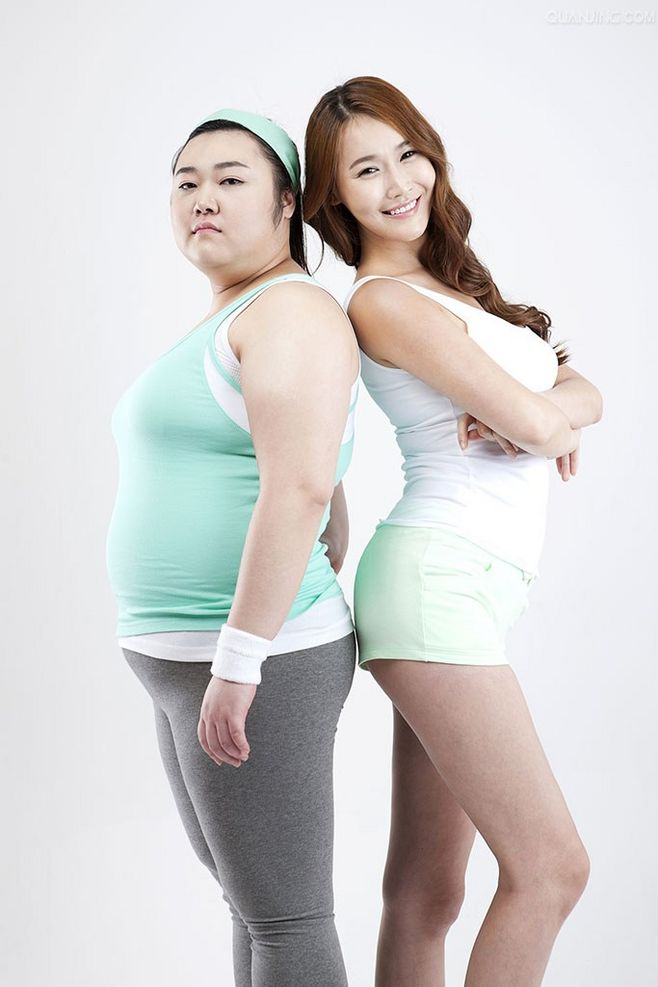
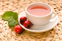
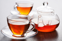

网站首页
关于我们
食疗养生
运动养生
美容美体
联系我们
网站首页
关于我们
食疗养生
运动养生
美容美体
联系我们
HERBAL & SPICED
食疗养生
食疗养生
Choose food, make food, and make good life
盘点10大减肥
错误观念
很多女性为保持身材，采取节食或运动的方式减肥。然而在庞大的减肥人群中，只有少
数的人能够减肥成功。

1
十大危害型人气美容谎言 你中招了没？
→
网络上有不少看似奇效的美容护肤秘方，效果被吹得天花乱坠自然会吸引到不少人跟风学习，不过请一定要擦亮你的双眼！人气高并不代表十分安全，虽然当下感觉效果惊人，瞬间击败贵价的专业产品，但说不定背后暗藏危害，等到脸上众多问题爆发时，美肌才真正不保！网络上有不少看似奇效的美容护肤秘方，效果被吹得天花乱坠自然会吸引到不少人跟风学习，不过请一定要擦亮你的双眼！人气高并不代表十分安全，虽然当下感觉效果惊人，瞬间击败贵价的专业产品，但说不定背后暗藏危害，等到脸上众多问题爆发时，美肌才真正不保！
最性感的女性
身体部位排行
很多女性为保持身材，采取节食或运动的方式减肥。然而在庞大的减肥人群中，只有少
数的人能够减肥成功。
化妆在中世纪代表对神不敬?百年彩妆史
→
网络上有不少看似奇效的美容护肤秘方，效果被吹得天花乱坠自然会吸引到不少人跟风学习，不过请一定要擦亮你的双眼！人气高并不代表十分安全，虽然当下感觉效果惊人，瞬间击败贵价的专业产品，但说不定背后暗藏危害，等到脸上众多问题爆发时，美肌才真正不保！网络上有不少看似奇效的美容护肤秘方，效果被吹得天花乱坠自然会吸引到不少人跟风学习，不过请一定要擦亮你的双眼！人气高并不代表十分安全，虽然当下感觉效果惊人，瞬间击败贵价的专业产品，但说不定背后暗藏危害，等到脸上众多问题爆发时，美肌才真正不保！
2
山东山里娃养生保健管理有限公司创始于2008年,主要涉及健康疗养、足浴连锁、创投基金为主的健康养生产业,总部设在潍坊。
快捷通道
茶品中心
新闻资讯
关于我们
联系我们
热销产品


© 宏延养生有限公司 蜀ICP备13004xxx号-4